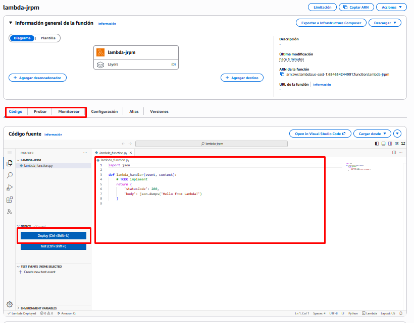
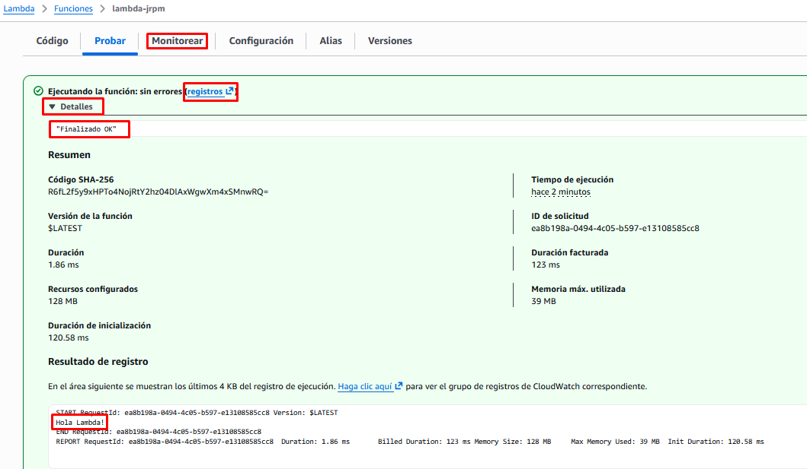

Práctica 1. Hello Lambda!
Creación de una función Lambda básica.
Objetivo de la práctica
- Crear una función Lambda desde cero y desplegarla.
- Conocer los dos objetos relacionados con las funciones: el objeto de evento y el objeto de contexto.
- Probar una función.
- Ver los logs del resultado de la ejecución de la función.
- Crear un evento desencadenador de la función.
Práctica a realizar
Creación de la función lambda
1.- Inicia sesión en la Consola de AWS y entra en el servicio Lambda.
- Pulsa en “Crear función.
-
Especifica:
- Crear desde cero.
- Nombre de la función: debe ser único en la región (por ejemplo:
lambda-tusiniciales). - Versión ejecutable: especificamos el lenguaje de programación que vamos a usar (Python 3.14)
- Rol de ejecución predeterminado: Usar un rol existente (LabRole)
-
Deja todos los demás campos por defecto.
- Crea la función pulsando “Crear función”.
Modificación del código de la función
Una vez creada la función, se nos muestra una consola en la que vemos, entre otras cosas:
- Un Diagrama (de momento está únicamente la función, sin ningún desencadenador ni destino).
- Una pestaña de Código: donde introduciremos el código a ejecutar por nuestra función.
- Una pestaña de Probar el código pasándole parámetros a la función.
- Una pestaña de Monitorear desde la que podremos acceder a la consola de CloudWacht para ver los logs de ejecución.

2.- Sustituye el código que aparece en el editor por el siguiente:
def lambda_handler(event, context):
print("Hola Lambda!")
return "Finalizado OK"
Estas 3 líneas significan lo siguiente:
def lambda_handler(event, context):
Define la función principal que ejecutará AWS Lambda. Lambda siempre busca una función con ese nombre.
event: contiene los datos que llegan a la función (por ejemplo, del API Gateway, S3, DynamoDB, etc.).
context:contiene información sobre la ejecución (tiempo restante, nombre de la función, etc.).
print("Hola Lambda!")
Escribe un mensaje en los logs de CloudWatch. (Es útil para depurar.)
return "Finalizado OK"
Devuelve una respuesta. Ese valor se envía al cliente (si la Lambda está detrás de una API) o al servicio que la invocó.
En este caso, devolverá simplemente el texto "Finalizado OK".
Nota
El objeto event proporciona información acerca del evento que desencadenó la función de Lambda.
El contenido del objeto de evento incluye todos los datos y metadatos que la función de Lambda necesita. El contenido y la estructura del objeto de evento difieren según la fuente del evento que lo haya creado. Por ejemplo, un evento que crea API Gateway tendrá detalles relacionados con la solicitud HTTPS que realizó el cliente, como la ruta, la cadena de consulta y el cuerpo de la solicitud. Sin embargo, un evento creado por Amazon S3 incluye detalles sobre el bucket y el nuevo objeto.
Despliegue de la función
3.- Una vez hemos modificado el código pulsamos sobre el botón Deploy para su despliegue. Desplegar no significa ejecutar, sino dejarlo listo para su ejecución.
Prueba de la función
Es hora de probar nuestra función. Para ejecutarla de prueba tenemos 2 opciones, pulsar sobre el botón Test (nos pedirá un evento de test que aún no hemos creado) o ir a la pestaña Probar desde donde podremos crear el evento de test y ejecutarlo.
4.- Vamos a la pestaña Probar que se encuentra entre Código y Monitorear.
5.- Crea un evento de prueba nuevo. Ponle un nombre y deja los edmás valores por defecto.
Nos ha dejado unos valores por defecto en formato json para pasárselos por parámetro. No los vamos a tocar. Lo veremos en la siguiente práctica.
6.- Pulsamos sobre el botón Probar
Depuración de la función
7.- Para ver el resultado de la ejecución tenemos muchas opciones:
- Visualizar los detalles del mensaje emergente con el resultado de la ejecución.
- Acceder a los registros de CloudWatch.
- Acceder a la pestaña de Monitorear, que también nos lleva a Cloudwatch.
- Acceder de nuevo a la pestaña de Código y ver el resultado de la salida (Output) justo debajo del código.
Nos interesa ver el valor devuelto por la función: Finalizado OK
Y el mensaje de log que hemos introducido: Hola Lambda!

Captura la pantalla
Captura la pantalla como la del ejemplo en la que se vea el nombre de la función, el valor devuelto y el mensaje en el log.